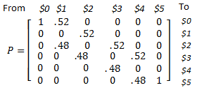

Predicting Outcomes With Markov Chains Alex, Bryce, Daniel, Katrina, Tae
INTRODUCTION
- Most widely used applications of Linear Algebra
- Describes a sequence of possible events in which the probability of each event depends only on the state attained in the previous event
- A basic Markov Chain consists of:
- a current state c0 , or initial state. Used for the basis of future states
- a stochastic matrix P, an nxn collection of probability vectors based on the number of states (n)
- Probability vector is one that is made up of nonnegative entries that add up to 1
- Resulting Markov Chain is thus formed where c1 = Pc0, c2 = Pc1,...,c(k+1) = Pck, where k is an integer
- Can be used to determine results for a future event
- Reliable, but not always the best method
Objectives:
- Understand the nature of Markov’s chain and it’s stability with different situations
- Understand how the probability evolves with the chain
METHODOLOGY
EXAMPLE #1 - THIS WEEK'S FORECAST
Suppose that tomorrow’s weather only relies on today’s weather, and does not rely on any previous days. Given the tendencies of the December weather in Long Beach, the following stochastic matrix was created using data from December 2012 in the Farmer’s Almanac.
Today’s weather (Monday, December 2, 2013) determined by observation:

To predict the weather of any future day, simply raise P to the desired state vector, e.g. one would calculate the following to find Friday (x4):
EXAMPLE #2 - GAMBLIN' YOUR LUNCH MONEY
There exists a generous gambling game with probability .48 winning $1 on any turn, but .52 chance you will lose $1. It is free to play, but you must have at least $1 up to $4. You start with $1, and the game stops when you are either broke (lose) or have $5 (win).
Important questions to answer:
- Should you play?
- What is the probability you win $5 or go broke?
- How do your chances of winning change if you start with more money?
Stochastic Matrix for the generous gambling machine:

What happens when you start with $1?
A $1 bet is represented as x0 = [0 1 0 0 0 0]T.

What happens when you start with $4?
A $4 bet is represented as x0 = [0 0 0 0 1 0]T.

RESULTS & OBSERVATIONS
- We found out that using December 2012 weather data to predict the 5-day forecast of a week in December 2013 was not accurate
- We discovered that trying to predict weather based on past events or states was, at best, flawed conjecture
- The weather in December 2013 might not necessarily be the same type of weather as it was in December 2012
- One should only play the "generous" gambling game if the bids are high
Altough the odds of winning seem appealing, it is not worth it unless "you go big, or go home".
CONCLUSION
- Markov Chain good for predicting in events like gambling, but not weather
- Weather has too many variables
- Gambling machines and games usually have set probabilities
- Using Markov for weather is only reliable for short term prediction
- Using Markov for gambling shows the following:
- If the bid is higher, the probability to win is higher
- If the bid is lower, the probability to win is lower
- Ultimately, the accuracy of the Markov Chain depends on the consistency of the system
SUMMARY
- Stochastic matrix is a square matrix whose columns are probability vectors based on previous data
- The Markov chain is a probability vector and used to predict possible outcomes, such that X(k+1) = PXk for k = 0,1,2,...
- Overall, the Markov chain has the potential of estimating the approaching result in the field of business, chemistry, engineering, physics, and elsewhere
SOURCES
- Lay, David C., Linear Algebra and its applications, Pearson, 4th e., 2012
- Farmer's Almanac
- Markov Chains and Prediction - Devika Subramanian
- Markov Chain Illustration - American Scientist
- Forecasting Using Markov Chain - Ranjit Kumar Paul
- Markov Chains
- Markov Chains Lecture - Zelda Zabinsky